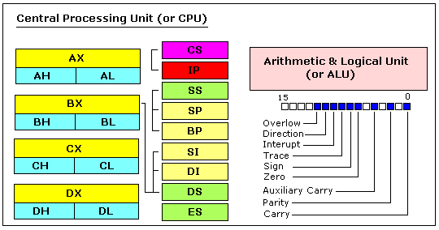
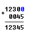

Уроки Ассемблера 8086 для начинающих (Часть 1)
Перевод: Поляков А.В. http://www.avprog.narod.ru
Эти уроки предназначены для тех, кто вообще не знаком с Ассемблером, или имеет весьма отдаленное представление о нем. Конечно, если вы имеете опыт программирования на других языках (Basic, C/C++, Pascal...), то это вам очень поможет.
Но даже если вы хорошо знаете Ассемблер, то просмотр этого документа вам не помешает, так как здесь вы можете изучить синтаксис Emu8086.
Подразумевается, что вы имеете некоторое представление о системах счисления (HEX/BIN). Ну а если нет, то рекомендуем вам изучить раздел Системы счисления перед тем, как вы продолжите ознакомление с этим документом.
Что такое язык Ассемблера?
Язык Ассемблера - это язык программирования низкого уровня. Для начала вы должны ознакомиться с общей структурой компьютера, чтобы в дальнейшем понимать, о чем идет речь. Упрощенная модель компьютера:
System bus - системная шина (окрашена желтым цветом) соединяет различные компоненты компьютера.
CPU - центральный процессор - это сердце компьютера. Большинство вычислений происходит в CPU.
RAM - оперативная память (ОЗУ). В оперативную память загружаются программы для выполнения.
Строение CPU

РЕГИСТРЫ ОБЩЕГО НАЗНАЧЕНИЯ
Процессор 8086 имеет 8 регистров общего назначения, каждый регистр имеет имя:
•AX - регистр-аккумулятор (разделен на два регистра: AH и AL).
•BX - регистр базового адреса (разделяется на BH / BL).
•CX - регистр-счетчик (разделяется на CH / CL).
•DX - регистр данных (разделяется на DH / DL).
•SI - регистр - индекс источника.
•DI - регистр - индекс назначения.
•BP - указатель базы.
•SP - указатель стека.
Несмотря на имя регистра, программист сам определяет, для каких целей использовать регистры общего назначения. Основное назначение регистра - хранение числа (переменной). Разрядность вышеописанных регистров 16 бит, т.е., например, 0011000000111001b (в двоичной системе) или 12345 в десятичной (человеческой) системе.
4 регистра общего назначения (AX, BX, CX, DX) разделены на две части. К каждой части можно обращаться как к отдельному регистру. Например, если AX=0011000000111001b, то AH=00110000b, а AL=00111001b. Старший байт обозначается буквой "H", а младший байт - буквой "L".
Поскольку регистры расположены внутри процессора, то работают они значительно быстрее, чем память. Обращение к памяти требует использования системной шины, а на это уходит больше времени. Обращение к регистрам вообще не отнимает время. Поэтому вы должны стараться хранить переменные в регистрах. Количество регистров очень небольшое и многие регистры имеют специальное назначение, которое не позволяет использовать их для хранения переменных, но все же они являются наилучшим местом для записи временных данных и вычислений.
СЕГМЕНТНЫЕ РЕГИСТРЫ
•CS - указывает на сегмент, содержащий начальный адрес текущей программы.
•DS - обычно указывает на начальный адрес сегмента данных (переменных).
•ES - дополнительный сегментный регистр.
•SS - содержит начальный адрес сегмента стека.
Хотя в сегментных регистрах можно хранить любые данные, делать это неразумно. Сегментные регистры имеют строго определенное назначение - обеспечение доступа к блокам памяти.
Сегментные регистры работают совместно с регистрами общего назначения для доступа к памяти. Например, если мы хотим получить доступ к памяти с физическим адресом 12345h (в шестнадцатиричном исчислении), мы должны установить DS = 1230h и SI = 0045h. И это правильно, потому что таким образом мы можем получить доступ к памяти, физический адрес которой больше, чем значение, которое может поместиться в одиночном регистре.
Процессор вычисляет физический адрес, умножая значение сегментного регистра на 10h и прибавляя к полученному результату значение регистра общего назначения (1230h * 10h + 45h = 12345h):

Адрес, сформированный с помощью двух регистров, называется реальным адресом.
По умолчанию регистры BX, SI и DI работают с сегментным регистром DS; регистры BP и SP работают с SS.
Другие регистры общего назначения не могут формировать реальный адрес!
Также, хотя BX может формировать реальный адрес, BH и BL не могут!
РЕГИСТРЫ СПЕЦИАЛЬНОГО НАЗНАЧЕНИЯ
•IP - командный указатель.
•Флаговый регистр - определяет текущее состояние процессора.
Регистр IP всегда работает совместно с сегментным регистром CS и указывает на выполняемую в данный момент команду.
Флаговый регистр автоматически изменяется процессором после математических операций. Он позволяет определять тип результата и передавать управление другим участкам программы.
Вообще вы не можете напрямую обращаться к этим регистрам.
>>> Следующая часть >>>
|